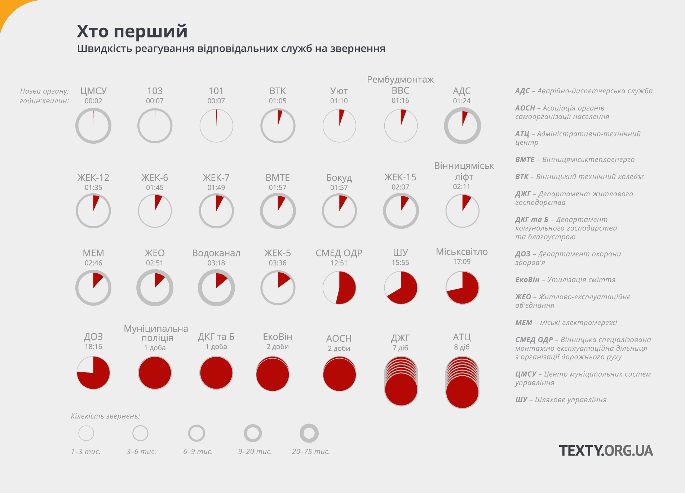

Вінницький проект «Цілодобова варта» — предмет гордості місцевої влади. Це гаряча лінія, куди містяни звертаються з більшості проблемних питань, зокрема якості надання комунальних послуг та аварійних ситуацій, за бажання тут можна отримати й психологічну допомогу. Подібні служби існують в інших українських містах, однак саме у Вінниці вона справді популярна. Для реакції на половину всіх звернень комунальникам потрібно трохи менше двох з половиною годин. Звідки та коли надходять дзвінки, як на них реагують різні відповідальні служби — «Тексти» отримали базу даних «Варти» від жовтня 2013 року й готові дати відповіді на ці питання.
За час існування єдиної бази даних Відділу оперативного реагування «Цілодобова варта» було зареєстровано 277 531 випадок звернень громадян. Переважна більшість всіх дзвінків до «Цілодобової варти» стосується обслуговування комунальної інфраструктури. П’ять найбільш поширених типів проблем стають причиною понад 70% усіх дзвінків — це холодне та гаряче водопостання, електроенергія, опалення та каналізація.
Для кожної з цих проблем ми намалювали окрему карту, на яку нанесли всі випадки звернень громадян від жовтня 2013 року до липня цього року. Кожен похилий стовпчик на карті — окреме звернення. На картах також вказано загальну кількість звернень із відповідного типу проблем, а також час, за який відповідальні служби встигають вирішити половину проблем (медіанний час реакції).
Тут і далі у статті, де ми говоримо про час реакції на звернення містян, вказується медіанний, а не середній час, оскільки невелика кількість випадків надміру довгої реакції робить значення середнього арифметичного непоказовим. Детальніше про динаміку реакцій на звернення йдеться у другій частині статті.
Проблеми з холодною водою виникають по всій Вінниці, але найбільше з цього приводу дзвонять жителі Вишеньки, Замостя та центру міста.
Дзвінків щодо гарячої води надходить найбільше — трохи менше 47 тисяч за весь період, на 10 тисяч більше, ніж звернень щодо проблем із водою холодною. Тим не менше, територіально ці звернення зосереджені суттєво чіткіше у західній частині Вишеньки, на північний схід від Поділля та на Замості. (чому так? на окраїнах швидше за все просто немає централізованого гарячого водопостачання та опалення, це дійсно так?)
Ситуація з опаленням схожа із тією, яку ми бачимо у випадку гарячого водопостачання, що не дивно, адже ці два типи послуг централізовано надаються одними й тими самими компаніями — у Вінниці цим займається Вінницяміськтеплоенерго.
Забезпечення електроенергію це мабуть найбільш базова комунальна послуга, відтак із звернення з цього приводу надходять з усіх куточків Вінниці. Навіть у Старому місті, де активність дзвінків на номери «Варти» суттєво нижча, в питаннях, що стосуються електроенергії, не відстають від інших районів міста.
Проблеми з каналізацією також виникають по всьому місту, та все ж мешканці Старого міста та окраїн із цього приводу звертаються до «Варти» дещо рідше, натомість активніше стикаються з відповідними проблемами жителі густозаселених мікрорайонів на кшталт Вишеньки та центру міста. (чому? просто тому, що на окраїнах менше навантаження на каналізацію через те, що там більше приватних будинків? чи всюди там взагалі є каналізація?)
В середньому щодня до Цілодобової варти надходить 200 звернень. Динаміка викликів мало змінюється з роками, зате щоосені ближче до кінця жовтня спостерігається пік — разом із похолоданням сотні людей починають засипати операторів гарячої лінії дзвінками, задаючи одне і те саме одвічне питання: «Коли вже включать опалення?». Абсолютний рекорд зафіксували 19 жовтня 2015 року — в цей день містяни дзвонили на номери Варти 668 разів.

Для значної частини вінничан ранок починається із філіжанки кави, свіжого круасану та дзвінка на номер «Цілодобової варти». За ніч накопичується чимало проблем, що потребують негайного вирішення. Протягом трьох пікових годин (із 8:00 до 11:00) надходить майже третина усіх звернень мешканців міста. Комунальним службам зазвичай потрібен час, щоб розібратися з цією навалою, та й пообідати не завадить. Тож найбільше питань закривають у пообідній час, із 14:00 до 18:00.

Насправді, якщо вірити даним «Цілодобової варти», то реагують на звернення досить таки швидко. Чверть усіх проблем вирішується протягом першої години після надходження звернення, а за дві години двадцять хвилин відповідальні служби встигають відповісти вже на половину звернень.
Зате якщо звернення потрапило до тих 10%, які не встигли вирішити за добу, є шанс, що розгляд затягнеться. На деякі звернення реагують місяць, півроку, рік і більше. Рекорд — 707 днів (глянути, що ж це за звернення таке + подивитися всі випадки довгого реагування, може буде щось цікаве)

Різні відповідальні служби з різною швидкістю реагують на звернення, які на них переспрямовують оператори «Цілодобової варти».
Очевидно, що серед лідерів за швидкістю реакції опиняється швидка медична допомога та пожежники — такі вже у цих служб обов’язки.
ЖЕКи, Житлово-експлуатаційне об’єднання (ЖЕО), яке у багатьох випадках перебрало на себе функції перших, а також інші комунальні служби на кшталт Водоканалу реагують на виклики півтори-три години. Довше працюють Шляхове управління (16 годин), Міськсвітло (17 годин) та комунальне підприємство ЕкоВін, що займається питаннями утилізації сміття (2 доби!).
Очевидно, що серед лідерів за швидкістю реакції опиняється швидка медична допомога та пожежники — такі вже у цих служб обов’язки.
ЖЕКи, Житлово-експлуатаційне об’єднання (ЖЕО), яке у багатьох випадках перебрало на себе функції перших, а також інші комунальні служби на кшталт Водоканалу реагують на виклики півтори-три години. Довше працюють Шляхове управління (16 годин), Міськсвітло (17 годин) та комунальне підприємство ЕкоВін, що займається питаннями утилізації сміття (2 доби!).
Сергій Мартинюк погоджується, що проблема справді існує, але виправдовується: місто нічого не може з цим зробити. «Рівний доступ до освіти мають усі, але ні сама дитина, ні школа без сім’ї не справиться. Якщо сім’я малозабезпечена, якщо батьки приділяють більше уваги зароблянню грошей, а не вихованню дітей, то відповідно й ті діти десь втрачають контроль, і школа особливого впливу на це не має».
Проблема не місцева, а загальноукраїнська. Все, що Чернівці можуть зробити на даний момент, — це оплатити учням із малозабезпечених сімей харчування двічі на день у шкільних їдальнях. Але, вочевидь, цього замало. За словами Ірини Когут, міжнародні дослідження свідчать, що підтягувати слабших учнів до вищого рівня дуже допомагає якісна дошкільна освіта та більш пізній (не раніше 9 класу) рейтинговий відбір до найкращих навчальних закладів.
Автор висловлює подяку аналітичному центру CEDOS, Українському центру оцінювання якості освіти та міській раді Чернівців за надані статистичні дані.